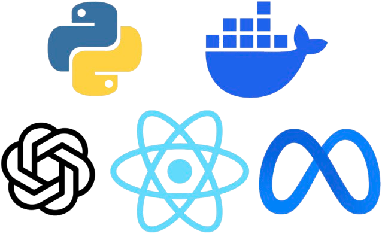

System Architecture
We implemented a modular RAG system composed of four key components:
- An NLP module for query parsing and entity extraction
- A vector search engine using FAISS
- A knowledge graph handler that queries DBpedia using SPARQL
- An LLM module (ChatGPT) that synthesizes the results into a final response
This design improves factual grounding while keeping retrieval, graph lookup, and generation components independently testable.
